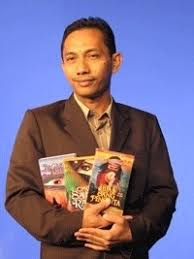
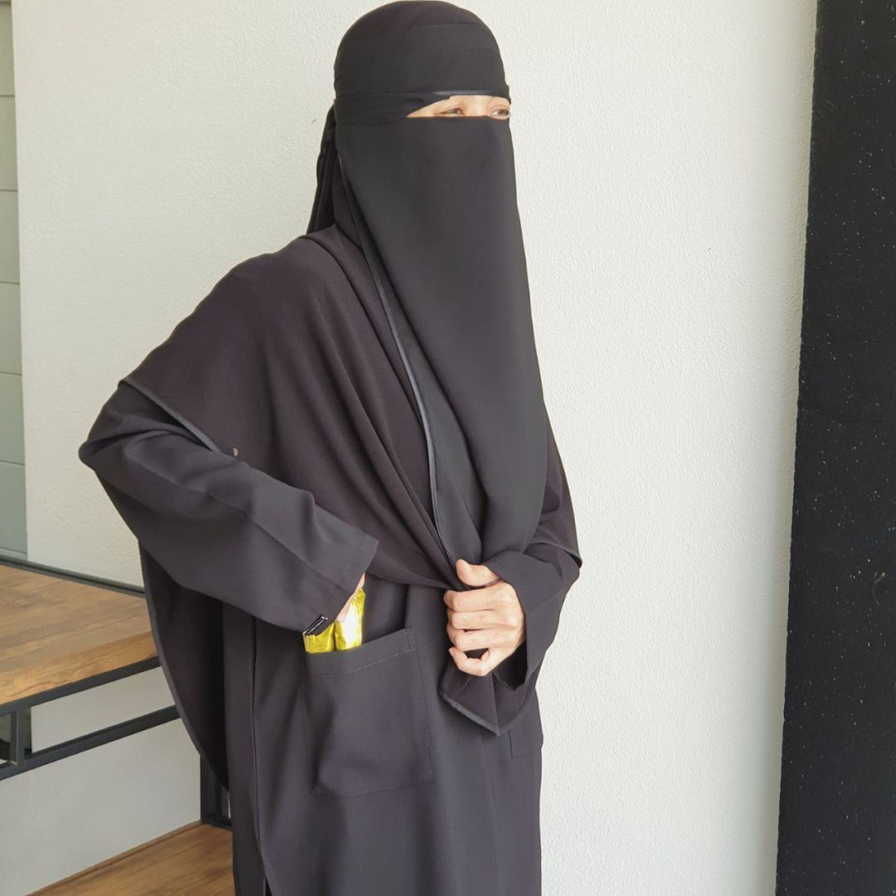

Fuel for My Fantasy & Crafts
Creativity thrives when inspired by others and supported by the right tools. I draw inspiration from talented artists, storytellers, and local studios, as well as from the rich folklore and cultures I love. Using digital art software and online learning platforms helps me improve my craft. This section shares the people, places, and resources that spark my imagination and help me grow as an illustrative novelist.
| Name | Contribution | Why They Inspire Me | |
|---|---|---|---|
|
Temie Abdullah
|
Malay Writer and Cultural Icon | His profound storytelling rooted in Malay culture sparks my passion for integrating heritage with modern narrative art. | |
|

Awang Mursyid
|
Popular Poet and Literary Figure | His lyrical poetry teaches me the power of concise yet impactful language, inspiring me to weave words and visuals tightly. | |
|

Fynn Jamal
|
Singer-Songwriter and Writer | Her ability to cross mediums—from music to prose—motivates me to blend art forms and reach audiences emotionally. |